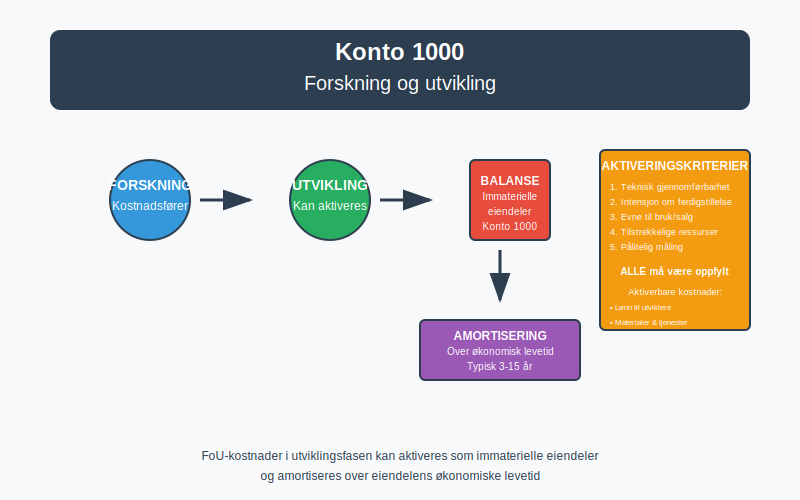
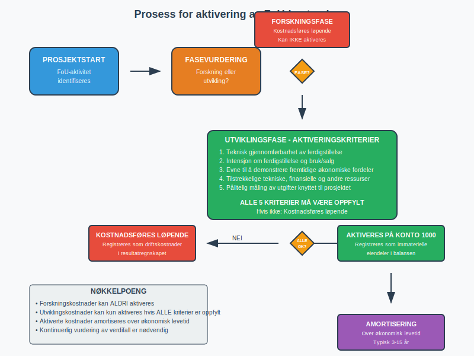
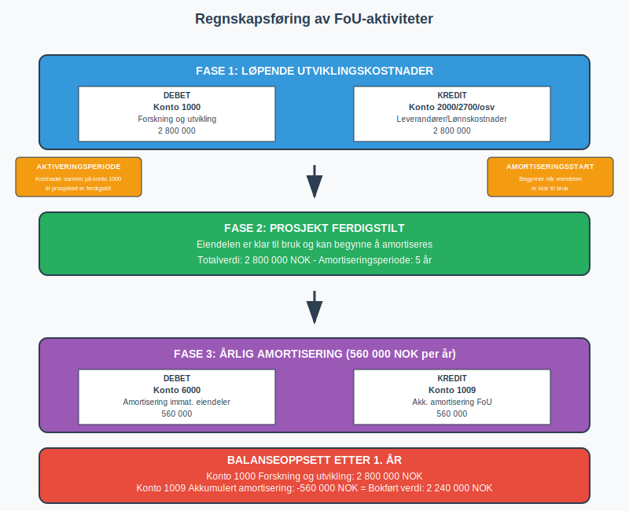

Konto 1000 - Forskning og utvikling er en av de viktigste kontiene for virksomheter som investerer i innovasjon og utvikling av nye produkter, tjenester eller prosesser. Denne kontoen brukes for å registrere immaterielle eiendeler knyttet til forsknings- og utviklingsaktiviteter som tilfredsstiller kriteriene for aktivering i balansen.

Hva er Forskning og utvikling?
Forskning og utvikling (FoU) omfatter systematisk, kreativ virksomhet som utføres for å øke kunnskapen og finne nye anvendelser av denne kunnskapen. I regnskapsmessig sammenheng skilles det mellom:
- Forskning: Planmessig og kritisk undersøkelse som har til hensikt å oppdage nye vitenskapelige eller tekniske fakta og innsikt
- Utvikling: Anvendelse av forskning eller annen kunnskap til å planlegge eller utvikle nye eller vesentlig forbedrede materialer, produkter, tjenester eller prosesser
Kriterier for aktivering av FoU-kostnader
For at FoU-kostnader kan aktiveres på konto 1000, må de oppfylle strenge kriterier:
Forskningsfasen
Kostnader i forskningsfasen kan ikke aktiveres og må kostnadsføres løpende som driftskostnader.
Utviklingsfasen
Kostnader i utviklingsfasen kan aktiveres dersom alle følgende vilkår er oppfylt:
- Teknisk gjennomførbarhet: Det er teknisk mulig å ferdigstille den immaterielle eiendelen
- Intensjon om ferdigstillelse: Virksomheten har til hensikt å ferdigstille og bruke eller selge eiendelen
- Evne til bruk eller salg: Virksomheten kan demonstrere hvordan eiendelen vil generere fremtidige økonomiske fordeler
- Tilstrekkelige ressurser: Tekniske, finansielle og andre ressurser er tilgjengelige for ferdigstillelse
- Pålitelig måling: Utgiftene kan måles pålitelig

Hva kan aktiveres på konto 1000?
Aktiverbare kostnader
- Lønn til personell som arbeider direkte med utviklingsprosjektet
- Materialer og tjenester som forbrukes i utviklingsprosjektet
- Avskrivninger på bygninger og utstyr brukt i prosjektet
- Indirekte kostnader som kan henføres til prosjektet
- Konsulenthonorar knyttet til utviklingsarbeid
Ikke-aktiverbare kostnader
- Generelle administrative kostnader
- Salgs- og markedsføringskostnader
- Opplæringskostnader
- Vedlikeholdskostnader
- Forskningskostnader (som nevnt over)
Amortisering og avskrivning
Immaterielle eiendeler på konto 1000 skal amortiseres over eiendelens økonomiske levetid. Amortiseringsperioden skal gjenspeile den perioden virksomheten forventer å ha nytte av eiendelen.
Typiske amortiseringsperioder
| Type utviklingsprosjekt | Vanlig amortiseringsperiode |
|---|---|
| Programvare og IT-systemer | 3-5 år |
| Produktutvikling | 5-10 år |
| Prosessforbedringer | 3-7 år |
| Teknologiutvikling | 5-15 år |
Viktig: Amortiseringsperioden må vurderes individuelt for hvert prosjekt basert på forventet økonomisk levetid og bransjestandarder.
Regnskapsføring av FoU-aktiviteter
Løpende utviklingskostnader
Debet: Konto 1000 - Forskning og utvikling
Kredit: Konto 2000 - Leverandører (eller relevant konto)
Amortisering av aktiverte FoU-kostnader
Debet: Konto 6000 - Amortisering immat. eiendeler
Kredit: Konto 1009 - Akkumulert amortisering FoU

Nedskrivning og verditest
Aktiverte FoU-kostnader må vurderes for nedskrivning dersom det foreligger indikasjoner på verdifall. Dette kan være aktuelt hvis:
- Prosjektet ikke lenger forventes å generere økonomiske fordeler
- Teknologiske endringer gjør prosjektet obsolet
- Markedsforholdene endrer seg negativt
- Konkurrerende produkter lanseres
Eksempel på bruk av konto 1000
Eksempel: TechNorway AS utvikler en ny applikasjon for mobile betalinger. Prosjektet startet 1. januar og forventes ferdigstilt 31. desember samme år.
Kostnader i prosjektet:
- Lønn til utviklere: 2 000 000 NOK
- Konsulenthonorar: 500 000 NOK
- Lisenser og programvare: 300 000 NOK
- Totalt: 2 800 000 NOK
Regnskapsføring:
- Løpende registrering av utviklingskostnader på konto 1000
- Ferdigstillelse av prosjektet 31. desember
- Amortisering over 5 år (560 000 NOK årlig)
Forskjell fra andre immaterielle eiendeler
| Konto | Beskrivelse | Hovedforskjell |
|---|---|---|
| 1000 | Forskning og utvikling | Selv-utviklede eiendeler |
| 1001 | Goodwill | Kjøpt ved virksomhetsoppkjøp |
| 1020 | Konsesjoner | Kjøpte rettigheter og tillatelser |
| 1030 | Patenter | Beskyttede tekniske oppfinnelser |
| 1040 | Lisenser | Rettigheter til ekstern IP |
| 1003 | Programvare | Kjøpte programvareløsninger |
Rapportering i årsregnskapet
FoU-kostnader på konto 1000 rapporteres som anleggsmidler i balansen under immaterielle eiendeler. I notene til årsregnskapet må det opplyses om:
- Anskaffelseskost ved årets begynnelse
- Tilgang i løpet av året
- Amortisering i løpet av året
- Balanseført verdi ved årets slutt
- Amortiseringsmetode og -periode
Skattemessige forhold
Skattemessig behandling av FoU-kostnader kan avvike fra regnskapsmessig behandling:
- Forskningskostnader: Fradragsberettigede når de påløper
- Utviklingskostnader: Kan aktiveres skattemessig, men kan også kostnadsføres direkte
- Amortiseringsperiode: Minimum 5 år for aktiverte FoU-kostnader
Merk: Det kan oppstå midlertidige forskjeller mellom regnskapsmessig og skattemessig behandling som påvirker beregning av utsatt skattfordel eller utsatt skatt.
Internasjonale regnskapsstandarder
Under IFRS reguleres FoU-kostnader av IAS 38 “Immaterielle eiendeler”. Hovedprinsippene er like norsk GAAP, men det kan være forskjeller i:
- Definisjonen av forsknings- vs. utviklingsfase
- Kriterier for aktivering
- Amortiseringsmetoder
- Verditesting og nedskrivningsregler
Praktiske tips for virksomheter
Dokumentasjon
- Føre detaljerte records over alle FoU-relaterte kostnader
- Skille tydelig mellom forsknings- og utviklingsfase
- Dokumentere at aktiveringskriteriene er oppfylt
Kontroll og oppfølging
- Regelmessig vurdering av prosjektets fremgang
- Kontinuerlig vurdering av aktiverte verdier
- Etablere rutiner for nedskrivningstesting
Organisering
- Opprette separate kostnadsenheter for hvert FoU-prosjekt
- Implementere systemer for tidsregistrering
- Etablere klare retningslinjer for kostnadsdeling